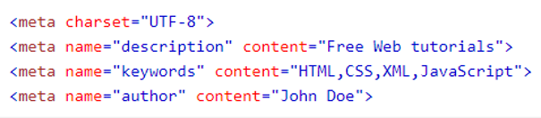
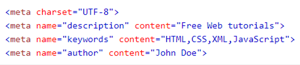

COMENTÁRIOS
Metadados são dados externos à página que são usados pelos navegadores (como exibir conteúdo), pelos mecanismos de pesquisa (palavras-chave) e outros serviços da web;
Eles são integrados à página HTML pela tag <meta>.

Metadados são dados externos à página que são usados pelos navegadores (como exibir conteúdo), pelos mecanismos de pesquisa (palavras-chave) e outros serviços da web;
Eles são integrados à página HTML pela tag <meta>.
